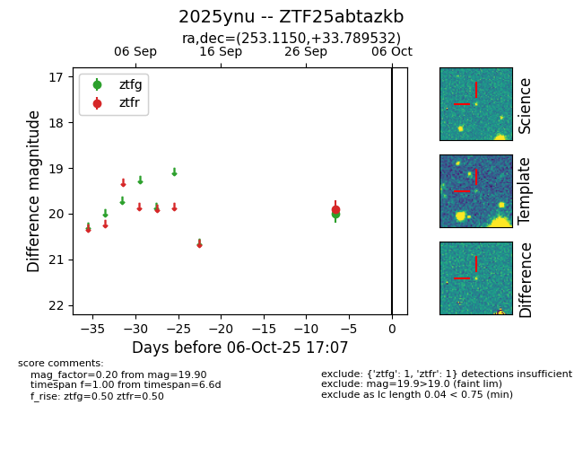

FINK: ZTF25abtazkb
Lasair: ZTF25abtazkb
ALeRCE: ZTF25abtazkb
TNS: 2025ynu
YSE: 2025ynu
ZTF25abtazkb (ztf,fink)
2025ynu (tns,yse)
equatorial (ra, dec) = (253.1150,+33.78953)
galactic (l, b) = (55.9756,+38.35711)

last ztfg=20.00, ztfr=19.90
1 ztfg, 1 ztfr detections